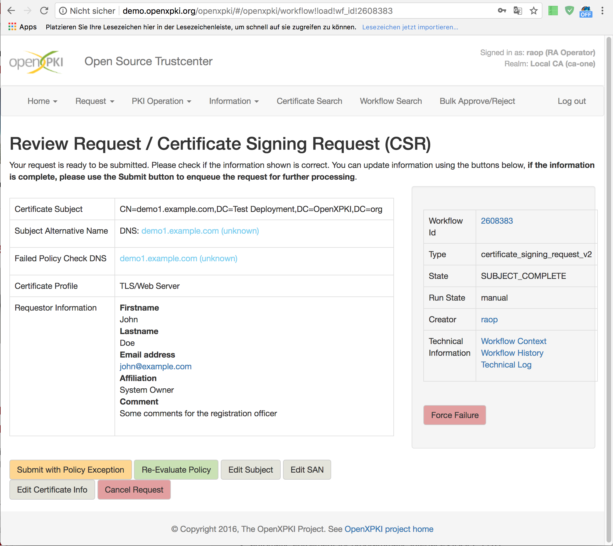

OpenXPKI was designed to support truly continuous PKI operation in enterprise environments. The project is actively maintained by an experienced team of PKI experts with a long-standing record of PKI related projects in large enterprise environments. Commercial support and training is available.
From the very beginning the original OpenXPKI architecture whitepaper (NOTE: the whitepaper is dated 2005, and the current implementation has progressed from that) outlined the vision for an OpenSource enterprise grade PKI software, including many features which the developer team of OpenXPKI still considers essential for a modern, professional PKI. Development of the project was driven and influenced by requirements from actual customer projects.
OpenXPKI aims at addressing some important challenges which impact planning and operation of a PKI. Many of the features implemented in OpenXPKI stem from real-world requirements in operative environments. The software contains some unique approaches to requirements in professional environments which are not covered by many other OpenSource (and several commercial) competitors.
Instead of locally customizing the system for a particular requirement, the OpenXPKI architecture and development team decided to systematically approach new project requirements by technical abstraction and generalization of the underlying business logic. Over the time this resulted in a very powerful architecture. OpenXPKI provides some unique approaches to addressing frequently recurring requirements from real-world projects.
The OpenXPKI core system provides a toolbox of simple, stateless cryptographic and utility functions.
All complex or stateful operations are modeled as Workflows which may use any of the static functions provided by the OpenXPKI core system. Workflow complexity can range from simple one-shot operations without persistence (e. g. for performing reporting functions) to complex and long-lived workflows which can span hours or days of lifetime (e. g. for manual certificate requests which require manual interaction of the requester and one or more Registration Officer approvers). Workflow instances can be interrupted and reinstantiated by users or by the system itself.

OpenXPKI comes with a selection of common workflows which fit the typical use cases of a PKI environment, e. g.
The stock workflows can be modified or extended to satisfy specific project needs, or entirely new workflows can be modeled for implementing non-standard requirements. The stock workflows already support most use cases the OpenXPKI team has encountered in customer projects.
Although OpenXPKI itself is implemented as a "headless" Unix daemon process, it comes with a powerful and generic Web frontend which allows users and administrators to work with the system. The Web frontend allows access to the Workflow catalogue, allowing users to instantiate new workflows and work on existing workflow workflow instances.
When working with the system, the web frontend renders the current state of the workflow according to the workflow definition and its internal state. This means that just by defining a workflow in the OpenXPKI configuration, a suitable Web based frontend implicitly is available in the system.
An OpenXPKI instance can host an arbitrary number of PKI Realms. A PKI Realm manages an entire namespace of end entity certifiates and may consist of zero, one or many Issuing CAs which can issue certificates for this namespace. A PKI Realm entails a set of workflows and policies for the management of certificates. PKI Realms are completely separated from each other.
Within a PKI Realm an arbitrary number of Issuing CAs can be configured which issue certificates for the PKI Realm namespace.
When issuing a certifiate, the OpenXPKI core automatically chooses the Issuing CA certificate (typically based on the highest NotBefore date of all available Issuing CA certificates) and uses this certificate for certificate issuance operations. Older Issuing CA certificates are retained in passive mode and are only used for issuing CRLs once the rollover to the most current CA Certificate has been performed. (Of course, this behaviour can be overridden by explicitly requesting a particular Issuing CA for the issuance operation.)
This mechanism allows for seamless and effortless CA rollovers within a PKI Realm without any system downtime or administrative interaction. Of course, it is also possible to administratively postpone the rollover to a date chosen by the administrator or to execute the rollover completely manually.
Upon reaching the end of an Issuing CA's certificate validity, the system automatically issues a final long-lived CRL for the expiring CA certificate to prepare for its retirement.
The entire OpenXPKI system is configured via a hierarchy of configuration files in YAML format. The system configuration can be easily managed in a revision control system such as Git. This approach allows to describe the system state in an auditable, verifiable manner.
It is possible to exclude sensitive information (such as database passwords) from the OpenXPKI configuration files by using the external tool KeyNanny for which native integration (via a KeyNanny Connector, see below) is provided.
OpenXPKI introduces the powerful concept of a Connector. AConnector implements an abstract key/value tuple interface. Within the OpenXPKI configuration a Connector can be configured by specification of the Connector implementation class and possibly additional static parameters to be passed to the Connector implementation.
Based on the key passed to the Connector instance the system resolves the implementation class and perfoms the underlying query. The resulting value is then returned to the caller.
A Connector can be used instead of any literal configuration value within the entire OpenXPKI configuration. The return value of the Connector is taken as the value of the corresponding OpenXPKI configuration value at runtime.
Connectors exist for querying flat files, LDAP directories, SQL databases, Web services and more.
The OpenXPKI system makes extensive use of the Connector concept by providing seamingly useless static default values in the configuration which can be replaced by Connector calls. By doing so it is easily possible to attach external data sources e. g. for authentication or authorization of certificate requests.
Connectors are also used for writing information, e. g. publishing of CRLs or certificates. The actual publishing code is thus completely isolated from OpenXPKI and can be developed and tested independently. For OpenXPKI it does not matter if a CRL shall be published to a local file, an LDAP directory or transferred to a remote system via scp - it's all handled via Connectors.
Connectors make it possible to customize and integrate OpenXPKI with its surrounding infrastructure on a level unmatched by most competitors.
OpenXPKI operation tasks are performed on the command line. The command line tool openxpkiadm allows OpenXPKI adminstrators to perform administrative tasks in textual form which makes it possible to exactly describe the administrative tasks in change task descriptions or scipts.
As an example the import of a new Issuing CA certificate can be done online (without stoping the OpenXPKI system) using the command line tool. If the system is configured properly, the system can automatically determine the correct private key to use for a particular CA certificate, including referencing the correct HSM protected key where applicable. This makes it entirely possible to perform an Issuing CA rollover without touching the configuration and allows to describe or script PKI operation tasks in order to achieve ITIL compliant change processes.
Other HSMs should work via the PKCS#11 interface.
Active/passive and active/active operation of multiple OpenXPKI instances is supported. All nodes within the cluster must share the same configuration.
Active/active requires a load balancer and a shared, redundant database. Load balancers should be configured to keep the target node IP address constant for a client over the course of a user session.
All OpenXPKI enrollment interfaces are very flexible and configurable. Where applicable they support automatic renewal based on the existing key of the previous certificate and also allow to integration external authentication and authorization sources via the Connector interface.
Following the "zero, one or many" paradigm of OpenXPKI it is possible to define an arbitrary number of enrollment interfaces of any type within a PKI Realm, making it possible to supporting individual modes of enrollment for different enrollment client groups.
OpenXPKI comes with a highly configurable SCEP server which is known to work with many client implementations.
Fully automatic end entity certificate renewal is possible e. g. via CertNanny (a client side certificate renewal agent using SCEP).
Native support for EST is provided.
The RPC interface allows to expose any Workflow via an RPC endpoint. It is possible to define an arbitrary number of RPC API endpoints for each PKI Realm which can be accessed via HTTP/HTTPS get/post requests (depending on Web server configuration). Each RPC interface can be connected to a distinct workflow for RPC call processing. This allows to implement business logic via the Workflow Engine of OpenXPKI while using the infrastructure key protection provided by the OpenXPKI core.
OpenXPKI includes reporting functions (implemented as one-shot workflows) which collect statics data for a PKI Realm and creates downloadable CSV files with the statistical data.